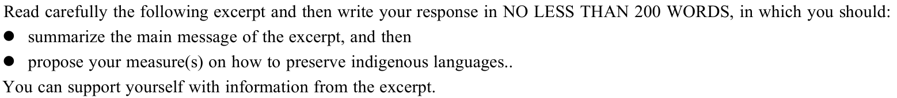
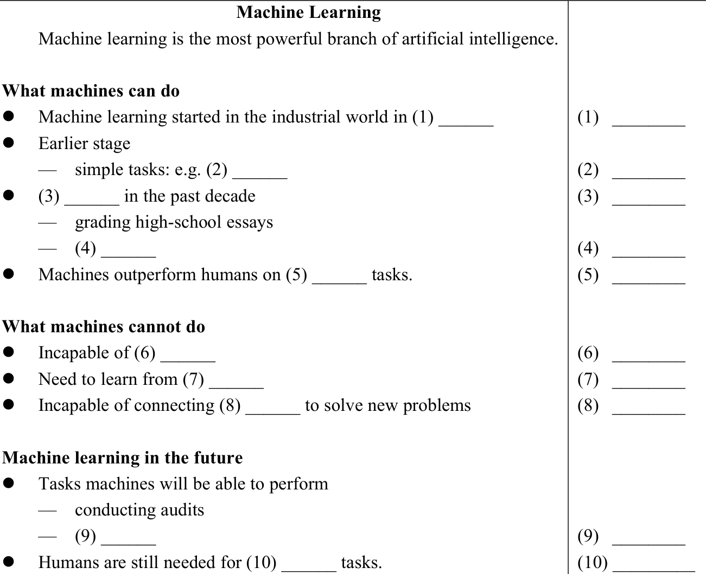

第 1 题 #
1.
点击查看答案
此题暂无可用答案。
英语专业四级 · questions · 2024
题号和章节目录由结构化数据生成。选项统一显示 A.、B.、C.、D.；原标记保留在 JSON 中。
Listen to the following passage. Altogether the passage will be read to you four times. During the first reading, which will be done at normal speed, listen and try to understand the meaning. For the second and third readings, the passage, except the first sentence, will be read sentence by sentence, or phrase by phrase, with intervals of 15 seconds. The last reading will be done at normal speed again and during this time you should check your work. You will then be given ONE minute to check your work once more.
Write on ANSWER SHEET ONE. The first sentence of the passage is already provided.
Now, listen to the passage.
China’s Parcel Delivery Business
China’s parcel delivery business has boomed in the past decade.
In this section you will hear a talk. You will hear the talk ONCE ONLY. While listening, you may look at the task on ANSWER SHEET ONE and write NO MORE THAN THREE WORDS for each gap. Make sure what you fill in is both grammatically and semantically acceptable. You may use the blank sheet for note-taking.
You have THIRTY seconds to preview the gap-filling task.
Now listen to the talk. When it is over, you will be given TWO minutes to check your work.
In this section you will hear two conversations. At the end of each conversation, five questions will be asked about what was said. Both the conversations and the questions will be spoken ONCE ONLY. After each question there will be a ten-second pause. During the pause, you should read the four choices of A, B, C and D, and mark the best answer to each question on ANSWER SHEET TWO.
You have THIRTY seconds to preview the choices.
Now, listen to the conversations.
Questions 1 to 5 are based on Conversation One.
1.
此题暂无可用答案。
2.
此题暂无可用答案。
3.
此题暂无可用答案。
4.
此题暂无可用答案。
5.
此题暂无可用答案。
Questions 6 to 10 are based on Conversation Two.
6.
此题暂无可用答案。
7.
此题暂无可用答案。
8.
此题暂无可用答案。
此题暂无可用答案。
10.
此题暂无可用答案。
There are twenty sentences in this section. Beneath each sentence there are four options marked A, B, C and D. Choose the one that best completes the sentence or answers the question. Mark your answers on ANSWER SHEET TWO.
11. Awaiting me is a demanding job that I just don’t know ________ I’m going to do.
此题暂无可用答案。
12. By the end of last month, our cute baby ________ in this world for 100 days.
此题暂无可用答案。
13. ________ wounded soldier was ________ good old friend of his.
此题暂无可用答案。
14. The children were ________ hungry and each of them could have eaten a horse.
此题暂无可用答案。
15. ________ your generous assistance, I couldn’t have accomplished this daunting task in time.
此题暂无可用答案。
16. She was impressed by the view of ________ mountains behind the apple orchard.
此题暂无可用答案。
17. In phrases like biting cold, scorching hot, or dazzling bright, the -ING participle is used as ________.
此题暂无可用答案。
18. “There used to be a bus stop around the corner of the street.” The italicized part in the sentence indicates
________.
此题暂无可用答案。
19. “We were to have been there now, but the traffic jam was so serious.” The italicized part signifies ________.
此题暂无可用答案。
20. “Alice has an urgent task, and she must be working late at the office now.” The italicized word in the sentence
expresses ________.
此题暂无可用答案。
21. He tricked the kid ________ trusting him by pretending that he had super power.
此题暂无可用答案。
22. Everyone in the company agrees that their boss is a very resourceful and ________ man.
此题暂无可用答案。
23. In ________ of the strong earthquake last week, many families are deep in mourning.
此题暂无可用答案。
24. The factory is looking for better ways to ________ operations so as to improve productivity.
此题暂无可用答案。
25. The unique wall paintings in the old town are once again under the media ________.
此题暂无可用答案。
26. Please excuse me. I must ________ to some urgent business now.
此题暂无可用答案。
27. Not sophisticated at all, Tim is easy to lose his ________, which may hurt people around him sometimes.
此题暂无可用答案。
28. She often let the children play in the yard to keep them out of ________.
此题暂无可用答案。
29. The overall economic ________ for the newly emerging economy is very promising.
此题暂无可用答案。
30. They normally ________ one of their three arguments when criticizing their opponents.
此题暂无可用答案。
Decide which of the words given in the box below would best complete the passage if inserted in the corresponding blank. The words can be used ONCE ONLY. Mark the letter for each word on ANSWER SHEET TWO.
Tiny is mighty, at least when it comes to change. Over the last twenty years, I’ve found that almost everyone wants to make some kind of change: lose weight, get better sleep, reduce stress. We want to be more productive and creative. But the alarming levels of (31) ________, sleeplessness, and stress reported by the media tell me there is a painful (32)________ between what people want and what they actually do.
The disconnection between want and do has been blamed on a lot of things — but people blame it on (33) ________ for the most part. When our results fall (34) ________ of our expectations, many of us believe that something must be wrong with us. If (35) ________ we were better people, we wouldn’t have failed. Right?
NO. It isn’t your fault, and creating positive change isn’t as hard as you think. For too many years, myths, misconceptions, and well-meaning but unscientific advice have (36) ________ you up to fail. If you’ve attempted change in the past and haven’t seen results, you may have concluded that change is hard or that you can’t succeed because you (37) ________ motivation. Neither is accurate. The problem is with the approach itself, not with you.
Building (38) ________ and creating positive changes can be easy — if you have the right approach. In order to design successful habits and change your behaviors, the following three methods should be adopted in the very beginning. First, stop judging yourself. Second, take your aspirations and break them down into (39) ________ behaviors. Third, embrace mistakes as discoveries and use them to move (40) ________.
In this section there are three passages followed by ten multiple choice questions. For each multiple choice question, there are four suggested answers marked A, B, C and D. Choose the one that you think is the best answer and mark your answers on ANSWER SHEET TWO.
(1) Downturn’s new spending habits show the way to greater satisfaction.
(2) As the months passed, out went stacks of sweaters, shoes, pots and pans, even the television after a trial separation during which it was relegated to a closet. Eventually, Tammy Strobel and her husband Logan Smith, both 31, got rid of their cars, too. Her mother called her crazy. Today, three years after the couple began downsizing, they live in a studio with a nice-sized kitchen. They have money to travel and to contribute to the education funds of nieces and nephews. Because their debt is paid off, Ms. Strobel works fewer hours, giving her time to be outdoors and to volunteer. “The idea that you need to go bigger to be happy is false,” she says. “I really believe that the acquisition of material goods doesn’t bring about happiness.”
(3) While Ms. Strobel and her husband overhauled their spending habits before the recession, legions of other consumers have since had to adapt in ways that could ultimately make them happier.
(4) New studies of consumption and happiness show, for instance, that people are happier when they spend money on experiences instead of material objects.
(5) While the current round of stinginess may simply be a response to the economic downturn, some analysts say consumers may also be permanently adjusting their spending based on what they’ve discovered about what truly makes them happy or fulfilled.
(6) “This actually is a topic that hasn’t been researched very much until recently,” says Elizabeth Dunn, a psychology professor, who is at the forefront of research on consumption and happiness. “There’s massive literature on income and happiness. It’s amazing how little there is on how to spend your money.”
(7) Studies over the last few decades have shown that money, up to a certain point, makes people happier because it lets them meet basic needs. The latest round of research is all about emotional efficiency: how to reap the most happiness for your dollar.
(8) One major finding is that spending money for an experience — concert tickets, language lessons, dumpling-making classes — produces longer-lasting satisfaction than spending money on plain old stuff. “‘It’s better to go on a vacation than buy a new couch’ is basically the idea,” says Professor Dunn. Jennifer Black, president of the retailing research company Jennifer Black & Associates, said: “I think people are realizing they don’t need what they had. They’re more interested in creating memories.”
(9) Unlike consumption of material goods, spending on leisure and services typically strengthens social bonds, which in turn helps amplify happiness, research suggests. Paying for experiences also gives us longer-lasting happiness, because we can reminisce about them, researchers says. That’s true for even the most exasperating of experiences. That trip to Rome during which you waited in endless lines, broke your camera and argued with your spouse will typically be airbrushed with “rosy recollection”, says Professor Dunn. “Trips aren’t all perfect, but we remember them as perfect.”
(10) And experiences can’t be absorbed at once — it takes more time to adapt to them and engage with them than it does to put on a new leather jacket or turn on that shiny flat-screen TV. “We buy a new house, we get accustomed to it,” says Professor Lyubomirsky, who studies what psychologists call “hedonic adaptation”, a phenomenon in which people quickly become used to changes, great or terrible, in order to maintain a stable level of happiness. “We stop getting pleasure from it,” she says. And then, of course, we buy new things. Scholars have discovered that one way consumers combat hedonic adaptation is to buy many small pleasures instead of one big one. Instead of a new Jaguar, Professor Lyubomirsky advises, buy a massage once a week, have lots of fresh flowers delivered and make phone calls to friends overseas. Instead of a two-week long vacation, take a few three-day weekends. “We do adapt to the little things,” she says, “but because there’s so many, it will take longer.”
(11) Ms. Strobel now writes about her own life choices on the Internet. “My lifestyle now would not be possible if I still had a huge two-bedroom apartment filled with stuff, two cars, and 30 grand in debt,” she says. “Give away some of your stuff. See how it feels.”
41. What is the main reason for the change in people’s spending habits?
此题暂无可用答案。
42. Which of the following statements is TRUE according to the passage?
此题暂无可用答案。
43. What is the best title for the passage?
此题暂无可用答案。
(1) The five o’clock dads can only be seen on cable television these days. They eat dinner with their television families and provide counsel afterward in the den, exemplifying how men behave when they work eight hours a day.
(2) The five o’clock dad has become an endangered species. A corporate culture that believes presence is productivity, in which people of ambition are afraid to be seen leaving the office, has lengthened his workday and shortened his home life. So has an economy that makes it difficult for families to take a break even at the end of the month. For the man who is paid by the hour, that means never saying no to overtime. For the man whose loyalty to the organization is measured in time at his desk, it means goodbye to nine to five.
(3) To lots of small children it means a visiting father. The standard joke in one large corporate office is that the dads always say their children look like angels when they’re sleeping because that’s the only way they ever see them. A survey taken several years ago showed that roughly 12 percent of the men surveyed with children under the age of six worked more than sixty hours a week, and an additional 25 percent worked between fifty and sixty hours.
(4) No matter how you divide it up, those are twelve-hour days. When a talk show host adopted a baby recently, she said one reason she was not troubled by becoming a mother without becoming a wife was that many of her married female friends were “functionally single”, given the hours their husbands worked. The evening commuter rush is getting longer. The eight o’clock dad. The nine o’clock dad.
(5) There’s a horribly sad irony to this, that is, the quality of fathering is better than it was when the dads left work at five o’clock and came home to coffee pots and tuna casserole. The five o’clock dad was remote, a “wait till your father gets home” kind of dad with a newspaper for a face. The roles he and his wife had were clear: she did nurture and home, he did discipline and money.
(6) The role fathers have carved out for themselves today is a vast improvement, a muddling of those old boundaries. Fathers today do seem to be more emotional with their children, more nurturing, more open. Many say, “My father never told me he loved me” and so they tell their own children all the time that they love them.
(7) There are people who think that this is changing even now. A nonprofit organization advises corporations on how to balance personal and professional obligations and concerns, and its founder says she has noticed a change in the past few years. An increasing number of men have expressed their wishes to spend more time with their kids.
(8) This change can be to the good, not only for women but especially for men, and for kids, too. The stereotypical five o’clock dad belongs in a picture, with his “Ask your mother” and his “Don’t be a crybaby.” The father who believes hugs and kisses are sex-blind and a dirty diaper requires a change is infinitely preferable. What a joy it would be if he were around more.
(9) “This is the man’s half of having it all,” said Donald Long, a professor who teaches a course about men’s relationships that drew 135 students this year for thirty-five places, “We’re trying to do what women want of us, what children want of us, but we’re not willing to transform the workplace.” In other words, the hearts and minds of today’s fathers are definitely in the right place, if only their bodies could be there, too.
44. Which of the following reasons best explains the presence of more eight or nine o’clock dads?
此题暂无可用答案。
45. The statement “there’s a horribly sad irony” (Para. 5) suggests longer working hours have led to ________.
此题暂无可用答案。
46. From the last sentence of the passage, what can be inferred about today’s fathers?
此题暂无可用答案。
(1) When a Southerner took the trouble to pack a trunk and travel twenty miles for a visit, the visit was seldom of shorter duration than a month, usually much longer. Southerners were as enthusiastic visitors as they were hosts, and there was nothing unusual in relatives coming to spend the Christmas holidays and remaining until July. Often when newly married couples went on the usual round of honeymoon visits, they lingered in some pleasant home until the birth of their second child. Frequently elderly aunts and uncles came to Sunday dinner and remained until they were buried years later. Visitors presented no problem, for houses were larger, servants numerous and the feeding of several extra mouths a minor matter in that land of plenty. All ages and sexes went visiting, honeymooners, young mothers showing off new babies, convalescents, the bereaved, girls whose parents were anxious to remove them from the dangers of unwise matches, girls who had reached the danger age without becoming engaged and who, it was hoped, would make suitable matches under the guidance of relatives in other places. Visitors added excitement and variety to the slow-moving Southern life and they were always welcome.
(2) So Scarlett had come to Atlanta with no idea as to how long she would remain. If her visit proved as dull as those in Savannah and Charleston, she would return home in a month. If her stay was pleasant, she would remain indefinitely. But no sooner had she arrived than Aunt Pitty and Melanie began a campaign to induce her to make her home permanently with them. They brought up every possible argument. They wanted her for her own self because they loved her. They were lonely and often frightened at night in the big house, and she was so brave she gave them courage. She was so charming that she cheered them in their sorrow. Now that Charles was dead, her place and her son’s place were with his kindred. Besides, half the house now belonged to her, through Charles’ will. Last, the Confederacy needed every pair of hands for sewing, knitting, bandage rolling and nursing the wounded.
(3) Charles’ Uncle Henry Hamilton, who lived in bachelor state at the Atlanta Hotel near the depot, also talked seriously to her on this subject. Uncle Henry was a short, pot-bellied, irascible old gentleman with a pink face, a shock of long silver hair and an utter lack of patience with feminine timidities and vaporings. It was for the latter reason that he was barely on speaking terms with his sister, Miss Pitty. From childhood, they had been exact opposites in temperament and they had been further estranged by his objections to the manner in which she had reared Charles “Making a damn sissy out of a soldier’s son!” Years before, he had so insulted her that now Miss Pitty never spoke of him except in guarded whispers and with so great reticence that a stranger would have thought the honest old lawyer a murderer, at the least. The insult had occurred on a day when Pitty wished to draw five hundred dollars from her estate, of which he was trustee, to invest in a non-existent gold mine. He had refused to permit it and stated heatedly that she had no more sense than a June bug and furthermore it gave him the fidgets to be around her longer than five minutes. Since that day, she only saw him formally, once a month, when Uncle Peter drove her to his office to get the housekeeping money. After these brief visits, Pitty always took to her bed for the rest of the day with tears and smelling salts. Melanie and Charles, who were on excellent terms with their uncle, had frequently offered to relieve her of this ordeal, but Pitty always set her babyish mouth firmly and refused. Henry was her cross and she must bear him. From this, Charles and Melanie could only infer that she took a profound pleasure in this occasional excitement, the only excitement in her sheltered life.
(4) Uncle Henry liked Scarlett immediately because, he said, he could see that for all her silly affectations she had a few grains of sense. He was trustee, not only of Pitty’s and Melanie’s estates, but also of that left Scarlett by Charles.
47. Which of the following is INCORRECT according to Para. 1?
此题暂无可用答案。
48. Aunt Pitty and Melanie wanted Scarlett to stay on for all the following reasons EXCEPT ________.
此题暂无可用答案。
49. Which of the following is NOT the reason for the estrangement between Aunt Pitty and Uncle Henry?
此题暂无可用答案。
50. Which of the following words best describes Uncle Henry?
此题暂无可用答案。
In this section there are five short answer questions based on the passages in Section A. Answer the questions with NO MORE THAN TEN WORDS in the space provided on ANSWER SHEET TWO.
51. What does “downsizing” (Para. 2) mean?
此题暂无可用答案。
52. Cite TWO examples from Para. 10 to show how to maintain a longer stable level of happiness.
本页部分文字层异常，已保留原图文字区域；这些区域随窗口缩放，暂不能重新换行或复制。
此题暂无可用答案。
53. What does the statement “the five o’clock dad has become an endangered species” (Para. 2) mean?
此题暂无可用答案。
54. What does the phrase “functionally single” (Para. 4) mean?
此题暂无可用答案。
55. What does the statement “Henry was her cross and she must bear him” (Para. 3) mean?
此题暂无可用答案。

Marks will be awarded for content relevance, content sufficiency, organization and language quality. Failure to follow the above instructions may result in a loss of marks.
Write your response on ANSWER SHEET THREE.
Two indigenous languages are dying out every month
Despite UN efforts to highlight the daily disappearance of mother tongues across the world, the President of the General Assembly (PGA) warned that “challenges persist nonetheless”. “Every fortnight, at least one indigenous language vanishes from the face of the earth,” spelled out the PGA. “This translates into two extinct indigenous languages each month.”
He said it was “equally noteworthy,” that 15 per cent of the poorest people on the planet are indigenous.
Indigenous traditions have served as a “dependable means of acquiring knowledge” which can be transmitted across generations, he stated, citing examples of herbal medicine, food processing and settling disputes within communities.
And although linguistic diversity is essential to preserve humanity’s common heritage, which is critical to its survival, it is endangered with every language that goes extinct.
“With the death of languages, the indigenous people who speak them lose a significant part of their identity,” he lamented.
He urged the world to focus attention on the measures to ensure the survival of those which remain, underscoring that “schools have a major role to play”.
“By integrating indigenous languages into their curricula, they would have fulfilled the vital mission of shielding the languages from external damage and internal decline,” said the PGA.
本页部分文字层异常，已保留原图文字区域；这些区域随窗口缩放，暂不能重新换行或复制。
